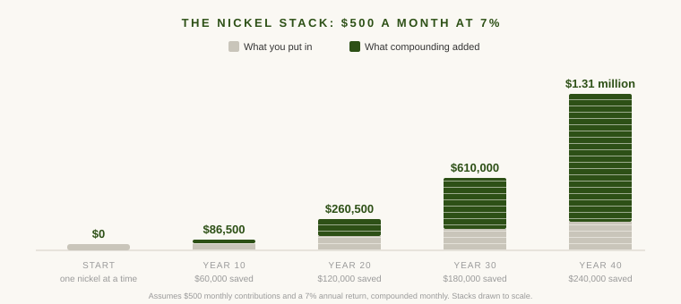

I have a confession. One of my guilty pleasures is Gold Rush on the Discovery Channel. I've watched just about every season, and there have been sixteen of them.
If you've never seen it, the show follows crews of gold miners digging, washing, and occasionally breaking down in spectacular fashion across Alaska and the Yukon. When it premiered in 2010, one of the people on screen was a sixteen-year-old kid named Parker Schnabel, working at his grandpa's mine in Haines, Alaska. It was basically a family hobby with cameras pointed at it.
Fifteen years later, Parker runs one of the largest placer mining operations on television. By Discovery's own count, he's pulled more than 63,000 ounces of gold out of the ground, worth somewhere near $98 million. What keeps me watching is that there was no moment where he got rich. No jackpot, no monster nugget. Just season after season of the same loop: mine the ground you have, take the profit, buy a little more ground and a little more machinery, and mine again. Some seasons went badly. He kept going.
I think about that loop a lot, because it shows up everywhere money is made. I call it stacking nickels, and most of the time, it's the right strategy.
What Stacking Nickels Means
Stacking nickels is my shorthand for small, repeatable, unglamorous progress. You do the thing you know how to do, you do it well, you keep the gains, and you do it again slightly bigger.
This is not the old Wall Street line about picking up nickels in front of a steamroller, which describes earning small gains while ignoring a huge risk rolling toward you. Stacking nickels is small gains with no steamroller. The process has to be durable enough to repeat for decades.
Nobody brags about this. There's no dinner party story in "I contributed to my retirement account again" or "we bought another modest rental." The financial world mostly sells the opposite: the crypto trade, the pre-IPO allocation, the deal of a lifetime.
But in sixteen years of working with wealthy families, most of the fortunes I've seen up close were not built on one big swing. They were built on a loop. A business that grew a little every year. Real estate bought one property at a time. Savings that compounded quietly while everyone else chased something more exciting.
Walmart Was Built a Store at a Time
If stacking nickels sounds like a small-time strategy, consider the biggest retailer on earth.
Sam Walton opened the first Walmart in 1962 in Rogers, Arkansas, a town of about 5,700 people. Five years in, he had roughly two dozen stores, all in small towns his competitors ignored. By 1970 he had 38. By the end of the decade, 276.
The results were dramatic. Sales roughly doubled every couple of years, one of the great growth runs in retail history. The method wasn't dramatic at all. No huge acquisitions, no bet-the-company moonshots. Walton took one proven store format and repeated it in overlooked town after overlooked town, plowing the profits back in each time. The same loop as a gold miner in the Yukon, just with parking lots instead of wash plants.
The loop is boring. The compounding isn't. Walmart held the No. 1 spot on the Fortune 500 for 13 straight years and is still the largest retailer on earth. It got there a store at a time.
Most of Life Is Stacking Nickels
This isn't really a money idea. It's a life idea that happens to work on money.
A good marriage is mostly showing up: the ordinary conversations, the small kindnesses, the thousandth dinner together. Raising kids is the same. Nobody remembers the individual Tuesday nights, but the Tuesday nights are the whole job. Even your house works this way. Clean the gutters, fix the small leak before it becomes a big one. None of it is interesting. All of it compounds.
My first boss out of business school, at the bank where I started my career, told me that most of a career is steady building. You do the work, you get a little better, and not much seems to happen. Then every once in a while things move in a lump: a promotion, a door that suddenly opens. You can't schedule the lumps. You can only be ready for them.
That's been about right for twenty years now. It also points at where people get in trouble. The ones who struggle are usually so focused on finding the next thing that they stop doing the daily thing. They're networking for the next job instead of being good at this one. And the big opportunities have a way of finding the people who were doing good work when they showed up.
The Most Common Nickel Stack of All
For most people, the purest version of this sits right in their paycheck. The 401(k) contribution. The IRA. The automatic transfer that happens whether you think about it or not.
Nobody has ever felt a thrill watching a payroll deduction, and any single contribution is almost meaningless on its own. But put away $500 a month earning 7% a year, and after 30 years you're sitting on roughly $610,000. Only $180,000 of that is money you contributed. Stretch it to 40 years and you're past $1.3 million, on $240,000 of contributions.

That outcome requires no skill and no courage. It requires that you don't stop. The people who end up with seven-figure retirement accounts are rarely the ones who found a perfect investment. They set the loop running in their twenties or thirties and let it run through every crash, every scary headline, and every year the contribution felt pointless.
The hard part is staying interested in something this uninteresting for three decades. Which is why it works. Most people won't.
How We Do It in Real Estate
This is also, more or less, how my family runs our own real estate portfolio.
We've done a few bigger projects over the years, but mostly we stick to what we know how to operate: the same types of properties, in markets we understand, managed the way we've learned to manage them. When we buy, the new property usually looks a lot like the last one.
It's not exciting, but it has kept working through interest rate cycles and everything else, because we never bet the whole stack on any single deal.
There are limits. At some point, if you want a meaningfully bigger portfolio, you probably need a different type of property, different financing, or partners. We know that. But a bigger move someday is not a reason to skip the small moves now. The nickels are what will pay for the bigger move when we find it.
This Is Not an Argument Against Big Swings
I'm not saying you should never take a big shot. Sometimes an opportunity shows up that's worth swinging at: the career change, the business, the deal that's mispriced because nobody else can see it. When the odds are good and you can survive being wrong, take the swing.
But big swings are occasional, and stacking is constant. You don't get to choose when the great opportunity appears. You do get to choose what you're doing in the meantime. And the stack is what makes the swing possible. Parker Schnabel could take a chance on new ground because years of steady seasons gave him the equipment and cash to survive a bad one. Walton could go national because hundreds of small-town stores were quietly funding it.
A big swing taken from a tall stack is a calculated risk. The same swing taken from nothing is a prayer.
Permission to Stack
If there's one thing to take from this, it's permission. Keep making the boring 401(k) contribution, running the small business, buying the unremarkable property, doing the good work nobody notices yet. Not as a fallback, but as a strategy, deliberately chosen, that has built more wealth than all the lottery tickets combined.
The world will keep telling you that real success requires a dramatic bet. But watch how the people who actually built something operate, whether it's a kid from Haines, Alaska or a shopkeeper from Rogers, Arkansas. Mostly they just kept showing up.
So stack your nickels, and keep your eyes open for the big one. The quiet work while you wait is not the consolation prize. It's the plan.
If this resonated, you might like Good Investing Is Boring, on why unexciting strategies win, and Are You Growing Your Money, or Keeping It?, on matching your strategy to your actual goal.